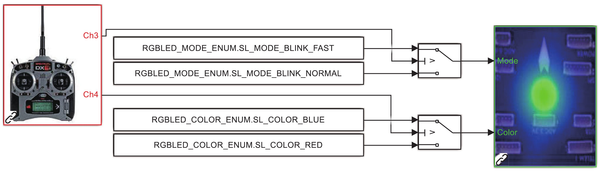

6. Examples¶
6.1. 控制 LED 灯实验操作具体流程¶
Pixhawk 自驾仪上 LED 灯闪烁的频率和颜色可以在 Simulink 中设计控制器来实时控制。本节以一个简单的 LED 灯控制实验为例子，介绍了本书实验平台所用软/硬件及其操作流程。
6.1.1. LED 灯实验目标¶
使用遥控器 CH1∼CH5 中任意两个通道，实现让 Pixhawk 自驾仪上的 LED 灯以两种颜色和两种模式闪烁。[source code]
图 4.2 LED 灯实验硬件关系图¶
6.1.2. 设计 LED 灯控制模型¶
实验使用 PSP 工具箱中的“RGB LED”模块，控制 Pixhawk 自驾仪上的LED灯。
（1）新建一个 Simulink 模型文件，在Simulink 的“Pixhawk_Target_Blocks”工具箱中找到“RGB_LED”模块，并添加到新建的模型文件中。因为还需用到遥控器来控制 LED 灯，所以把遥控器模块“input_rc”添加到模型中。这里也提供一个已经完成所有配置的 Simulink 文件，详见“e02.PSPOfficialExpspx4demo_input_rc.slx”。
图 4.3 PSP 工具箱中的“RGB LED”模块¶
（2）RGB LED 模块可以用来控制 Pixhawk 自驾仪上 LED 灯的闪烁模式和颜色。其中模式枚举变量“RGBLED_MODEENUM”包括以下 7 个：
SL MODE OFF
SL MODE ON
SL MODE DISABLED
SL MODE BLINK SLOW
SL MODE BLINK NORMAL
SL MODE BLINK FAST
SL MODE BREATHE.
颜色枚举变最“RGBLED COLOR ENUM”有以下选项：
SL COLOR OFF
SL COLOR RED
SL COLOR GREEN
SL COLOR BLUE
SL COLOR YELLOW
SL COLOR PURPLE
SL COLOR AMBER
SL COLOR CYAN
SL COLOR WHITE.
以上变最在安装 PSP 工具箱的时候已经在 MATLAB 全局参数中注册了，因此可以直接调用。例如，在 LED 模块的“Mode”端口(LED 模块上侧输入端口）直接用常数 “Constant”模块输入“RGBLED_MODE_ENUM.SL_MODE_BLINK_FAST”，在“Color”端口(LED 模块下侧输入端口）用常数“Constant”模块输入“RGBLED_COLOR_ENUM.SL_COLOR_BLUE”，可以得到蓝灯快闪的灯光效果。
（3）控制器设计。Pixhawk 自驾仪收到的 PWM 信号的数据范围为 1100∼1900 微秒，这里选择使用遥控器中的两个通道来分别控制 LED 灯的模式和颜色。
图 4.4 遥控器控制 LED 设计模型¶
①遥控器的 CH3 通道改变LED 灯的模式。当油门摇杆拨到上侧，即 CH3 通道的 PWM值大于 1500 微秒（简写为 CH3>1500)时，“Mode”端口接收“RGBLED MODE ENUM.SL MODE BLINK FAST”参数，对应快速闪烁；当 CH3引1500 时，“Mode”端口接收“RGBLED MODE ENUM.SL MODE BLINK NORMAL”参数，对应呼吸灯闪烁方式。②遥控器的 CH4 通道改变 LED 灯的颜色。当 CH4>1500 时，“Color”端口接收 “RGBLED COLOR ENUM.COLOR RED”参数，对应红色灯光；当 CH4引1500 时，“Color”端口接收“RGBLED COLOR ENUM.COLOR BLUE”，对应蓝色灯。
6.1.3. 控制器代码生成与固件下载¶
（1）对于 MATLAB 2017b∼2019a 版本，单击 Simulink 界面的 “Simulation”菜单，在下拉框中选择“Model Configuration Parameters”选项；对于 MATLAB 2019b 及更高版本，可单击工具标签栏上的“设置”按钮。完成上述操作后，可以进入模型参数设置页面。
图 4.5 模型配置、参数配置页面¶

图 4.6 模型参数设置页面¶
（2）选择目标硬件。将“Hardware Implementation”-“Hardware board”选项设置为“Pixhawk PX4”。
图 4.7 选择目标硬件¶
（3）编译模型。单击Simulink 工具栏上的“编译”按钮,即可进行Simulink 中设计模块与 PX4 固件的编译。
图 4.8 Simulink 编译代码¶
对于MATLAB 2017b∼2019a 版本，单击Simulink 下方状态栏的“View diagnostics”按钮或者单击菜单栏“View”-“Diagnostic Viewer”，可以打开代码生成诊断窗口查看代码生成和固件编译过程；对于 MATLAB 2019b及更高版本，单击工具标签栏上的“诊断”按钮即可。
图 4.9 不同版本 Simulink 的”诊断”按钮¶
见到 “Build process completed successfully”消息时，说明代码与固件编译成功了，同时可以看到报告生成页面。至此，相应的 C 语言代码已经在文件“Firmwaresrcmodulespx4 simulink app”中生成完毕，并且调用了“make px4fmu-v3_default”指令完成了固件的编译。
图 4.10 编译成功画面¶
图 4.11 报告生成¶
（4）下载固件。利用 PSP 工具箱提供的固件一键下载功能，具体步骤如下：
①用 USB 数据线连接计算机和 Pixhawk 自驾仪的 USB 口。②对于 MATLAB 2017b∼2019a 版本，在 Simulink 的 Code 下拉菜单中单击“PX4 PSP: Upload code to Px4FMU”选项；对于 MATLAB 2019b 及更高版本， 在MATLAB 主界面的“命令行窗口”输入“PX4Upload”命令来开始固件下载。
图 4.12 Simulink 固件下载菜单¶
Simulink 会自动识别Pixhawk 自驾仪，并将编译得到的 PX4 固件下载与部署。当进度条达到 100% 说明部署成功。注意，有时需要根据提示重新插拔 Pixhawk自驾仪才能开始下载与部署流程。
图 4.13 固件下载完成¶
6.1.4. 实验效果¶
默认状态下，即不操作遥控器时，LED 灯是蓝色慢闪。以下操作可验证实验效果：
（1）当遥控器的左手油门摇杆置于右上方位置(CH3>1500 且 CH4>1500)时，Pixhawk 自驾仪的 LED 灯为蓝色快闪；（2）当遥控器的油门摇杆置于左上方位置(CH3>1500 且 CH4<1500)时，Pixhawk 自驾仪的 LED 灯为红色快闪；（3）当遥控器的油门摇杆置于左下方位置(CH3<1500 且 CH4<1500)时，Pixhawk 自驾仪的 LED 灯为红色慢闪；（4）当遥控器的油门摇杆置于右下方位置(CH3<1500 且 CH4>1500)时，Pixhawk 自驾仪的 LED 灯为蓝色慢闪。
图 4.14 LED 实验效果图（左图蓝色，右图红色）¶
6.2. 姿态控制实验操作具体流程¶
这里以一个设计好的姿态控制系统为例，介绍整个实验的基本操作流程。该实验相对前面的 LED 灯控制实验更为复杂。
6.2.1. 基于 Simulink 的算法设计与仿真阶段¶
- （1）步骤一：控制器设计
新建一个 Simulink 文件，在其中设计多旋翼的姿态控制器。这里给出了一个设计好的例子，见文件“ e03.DesignExpsExp1 AttitudeController.slx “。控制器的设计要求包括输入数据、输出数据和期望效果。
图 4.15 Simulink 框图¶
1）输入数据
遥控器 CH1∼CH5 通道信号对应 “ch1”∼“ch5”输入端口。数据范围为 1100∼1900 微秒，因此在处理遥控器数据时需要校准或考虑死区；
多旋翼角速度(对应 “p”、“q”和“r”输入端口，单位 rad/s)。上述三个分量分别代表沿机体 x 轴转动角速度、沿机体 y 轴转动角速度和沿机体 z 轴转动角速度；
多旋翼欧拉角（单位 rad)。这里主要考虑滚转角和俯仰角，暂时不考虑偏航控制。
2）输出数据
四个电机的 PWM 控制信号（对应 “PWM”输出端口)，数据范围为 1000∼2000 微秒；
是否解锁标识符（对应 “ARM Control”输出端口)，数据类型为布尔型。
3）期望效果
CH3 油门通道控制多旋翼升降；
向前推俯仰摇杆（即 CH2 < 1500)控制多旋翼向前飞；
向左推滚转摇杆（即 CH1< 1500)控制多旋翼向左飞；
向下（或向后)拉拨杆开关（即 CH5 > 1500)解锁控制器。
- （2）步骤二：生成控制器子系统
将步骤一中Simulink模型的内容用鼠标全部选中（或者按下键盘 Ctrl+A)，右键鼠标，单击“Create Subsystem From Selection”即可将控制器封装为一个 Simulink 子系统。用鼠标右键单击该子系统模块，单击“Mask”-“Create Mask”打开子系统封面设置对话框。在“Icon drawing commands”输入框中输入“image(‘./icon/Pixhawk.png’);”后单击“OK”，并调整接口位置就可以得到姿态控制子模块。
图 4.16 Simulink 子系统封面设置对话框¶
图 4.17 生成的姿态控制子模块¶
- （3）步骤三：控制器与模型整合
打开上一章用到的 Simulink 多旋翼仿真程序“e01.SoftwareSimExpsCopterSim3DEnv- ironment.slx”，删掉其中的原有的控制器子模块（注意备份)，然后将步骤二中得到的姿态控制子模块复制进来进行替换。
- （4）步骤四：连线与输入输出配置
将控制器与多旋翼模型连接，其中，多旋翼模型的输出端口：“PosE”代表多旋翼相对地球坐标系的位置向量，“AngEuler”代表多旋翼的欧拉角向量，“AngRateB”代表多旋翼的转动角速度。由于此时遥控器信号在软件在环仿真阶段，可以用常值来代替，或者用函数模拟相应的遥控器动作。姿态控制器的角速度“p”、“q”和“r”输入可以从多旋翼模型的“AngRateB”向量获取；角度“roll”和“pitch”可以从多旋翼模型的“AngEuler”向量获取。这里也给出一个例子，已经连接好了控制器和虚拟遥控器信号，见文件“e03.DesignExpsExp2 ControlSystemDemo.slx”。
图 4.18 控制器和多旋翼模型连接¶
- （5）步骤五：开始联合仿真
双击FlightGear-F450 桌面快捷方式打开FlightGear,然后单击 Simulink 工具栏“运行“按钮开始仿真。此时可以在 FlightGear 飞行视景中:观察到多旋翼爬升一段时间后向左滚转并向左飞行,说明控制器实现了预期要求。
图 4.19 FlightGear 飞行视景¶
6.2.2. 代码生成与配置阶段¶
- （6）步骤六：代码生成环境配置
上述 Simulink 中的软件在环仿真完成后，将其中的控制器子系统单独复制出来，粘贴到文件“e03.DesignExpsExp3 BlankTemp.slx”中（这个文件已经配置好了代码生成所需的所有设置)，也可以新建一个空白 Simulink 文件并对 Simulink 文件进行配置。
- （7）步骤七：控制器与 PSP 模块连线
从 Simulink PSP 模块库中提取相应的输入和输出接口，与步骤六中的控制器进行连线。 “e03.DesignExpsExp4 AttitudeSystemCodeGen.slx”是一个完成连线的完整的姿态控制系统。注意，由于后面要进行硬件在环仿真而不是实际飞行，PWM 的输出信号需要通过uORB 模块给Pixhawk 自驾仪发送“actuator outputs”的 uORB 消息来实现，而不是直接用 PSP 工具箱的 PWM 输出模块。
图 4.20 完整的姿态控制系¶
- （8）步骤八：编译并生成固件
单击 Simulink 工具栏“编译”按钮，就可以自动编译生成代码，并生成自驾仪固件。得到下图的界面说明编译成功。
图 4.21 编译成功界面¶
- （9）步骤九：代码下载 Pixhawk 自驾仪
用 USB 数据线连接计算机和 Pixhawk 自驾仪，然后使用“PX4Upload”功能将固件下载到 Pixhawk 自驾仪中。下载成功的界面如下。

图 4.22 固件下载成功界面¶
6.2.3. 硬件在环仿真阶段¶
- （10）步骤十：硬件系统连接
用三口 JR 线连接接收机与 Pixhawk 自驾仪，然后 Pixhawk 自驾仪与计算机通过 USB 数据线连接。此时，可以看到 Pixhawk 自驾仪上的LED 蓝灯亮起并呼吸闪烁，接收机上的灯光为蓝白色常亮（这是对乐迪接收机，Futaba 接收机为绿色)。打开遥控器开关，可以观察到 Pixhawk 自驾仪上的 LED 灯快速闪烁一下，说明接收到遥控器数据。如果 Pixhawk 自驾仪的 LED 灯没有任何改变，说明遥控器与接收机的连接存在问题，需要检查确认。
- （11）步骤十一：模型仿真器软件配置
双击桌面的 CopterSim 快捷方式即可打开 CopterSim程序。不用配置任何参数（或者单击 “模型参数”-“还原默认参数”-“存储并使用参数”将多旋翼参数还原为默认值)，直接 在“飞控选择”下拉框中选择 Pixhawk 自驾仪的串口号（通常格式为 “ *** FMU COM3” )，再单击“开始仿真”按钮就可以进入硬件在环仿真模式。此时可以看到CopterSim界面左下角收到 Pixhawk 自驾仪返回的相关消息。
图 4.23 CopterSim 模型仿真器软件配置¶
- （12）步骤十二：多旋翼三维飞行显示程序配置
双击桌面的 3DDisplay 快捷方式即可打开 3Ddisplay程序。这个软件不需要任何配置，它会被动地接收模型仿真软件发送的多旋翼的飞行姿态与轨迹信息并实时显示。此时可以通过遥控器控制多旋翼进行飞行，来验证设计的姿态控制算法。将遥控器的油门杆置于右下角大约三秒钟来解锁 Pixhawk 自驾仪，然后将 CH5 拨杆开关拨到最靠后位置解锁控制器，便可开始用遥控器操纵多旋翼完成相应动作。在多旋翼三维飞行显示程序界面左侧观察多旋翼位置和姿态变化，界面右上角观察实时飞行数据，界面右下角观察多旋翼运动轨迹。
图 4.24 3DDisplay 多旋翼三维飞行显示程序¶
6.2.4. 实际飞行实验阶段与结果对比¶
- （13）步骤十三：安装 Pixhawk 到多旋翼机架上
实际飞行试验所采用的多旋翼为 F450 四旋翼，多旋翼的参数经过精确测量与系统辨识，保证实际模型与 Simulink 仿真模型是一致的。在实际飞行时需要在QGC 地面站中将机架类型从“Quadcopter X”修改为“DJI Flame Wheel F450”，并完成传感器校准。
图 4.25 F450 机架示意图¶
图 4.26 实际飞行时地面站机架设置¶
- （14）步骤十四：调整 Simulink 控制器
打开姿态控制 Simulink 文件，将uORB 模块换成 PSP 工具箱提供的 PWM out 模块（详见例程“e03.DesignExpsExp5_AttitudeSystemCodeGenRealFlight.slx”)，重新生成代码并下载到 Pixhawk 自驾仪中。
- （15）步骤十五：参数设置和测试
考虑到实际飞行的不确定性，以及自身生成的控制算法缺乏完整的失效保护逻辑，在实际飞行时应该充分考虑安全性问题。实际飞行实验应该选在相对空旷的区域（如草地），同时保证天气良好，风速较低。在上述条件满足情况下，将电池连接到 Pixhawk 自驾仪上，并按下 Pixhawk 自驾仪上安全开关(https://docs.px4.io/master/en/config/airframe.html#safety_switch)超过三秒钟，然后用遥控器控制多旋翼来验证控制器的实际效果。
图 4.27 将 uORB 模块换成 PWM output 模块¶
- （16）步骤十六：测试结果及分析
在接下来的内容中，我们将会展示硬件在环仿真和室外实际飞行时的飞行结果，来验证多旋翼模型的准确性。下图为设置CopterSim 中传感器噪声水平为 1.0 时的硬件在环仿真结果。其中，实线“PitchReal”为实际飞行实验结果，点线“PitchSim”为仿真结果，虚线“PitchSP”为理想的期望值。可以看出，仿真阶跃响应与实飞阶跃响应动态过程和噪声水平都比较接近。

图 4.28 噪声水平为 1.0 时的硬件在环仿真结果¶
设置噪声水平为 0 时的硬件在环仿真结果如下，可以看到仿真下解算的角度没有噪声，动态过程与实飞结果有一些差别。注意，由于机架类型“Quadcopter X”与实际飞行所用的“DJI Flame Wheel F450”并不完全一致，其控制器参数也存在区别，且 Pixhawk自驾仪串口的数据传输速度的波动会影响硬件在环仿真的实时性，因此响应曲线存在误差是正常的。同时，实际飞行时多旋翼的气动非常复杂，而模型中用了简化的气动模型，因此在最终的角度稳态响应曲线上存在一定的误差是可以接受的。
图 4.29 噪声水平为 0 时的硬件在环仿真结果¶